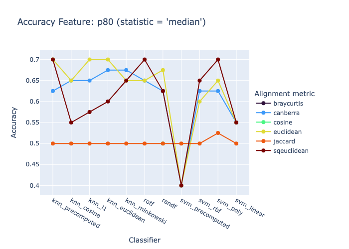

fftrio_segment0 = (14200, 14450)
fftrio_segment1 = (14950, 15200)Synchronization Classification of Signals of Individual Faces
Define Segments of the Opera
fftrio0 = Piece(
time_interval=fftrio_segment0,
title="Don Giovanni",
subjs=(40,76)
)fftrio1 = Piece(
time_interval=fftrio_segment1,
title="Don Giovanni",
subjs=(40,76)
)FFTRIO01_DIRNAME = 'fftrio0_fftrio1/'dirname = FFTRIO01_DIRNAME + 'face_db4_fast_minmax(2,3)'Define Embeddings
80th percentile in the frequency band 0.1 - 0.39 Hz of the Daubechies wavelet
db4
emb0 = fftrio0.face_t.project(
fbands=[2,3],
features=['p80'],
wdfactory=wfactory('db4',8)
)
emb1 = fftrio1.face_t.project(
fbands=[2,3],
features=['p80'],
wdfactory=wfactory('db4',8)
)emb0.frequencies[(0.1, 0.39)]from fhemb.utils.cutils import prepare_data, calc_and_save_pr_accuracy, plot_accuracy_summarySynchronization Classification of Pairwise Relation (Secondary) Embeddings
for feature in emb0.features: #
# iterate over this list of features of the Embedding object
print(f"Feature: {feature}")
X, y = prepare_data( # prepare the matrix X and label vector y for the two groups
emb0.get_df_ts_subjs(feature).T, # samples for group 0
emb1.get_df_ts_subjs(feature).T # samples for group 1
)
print(f"Shape: {X.shape}") # matrix (n_samples x n_dataframes)
filename=calc_and_save_pr_accuracy( # compute the classification accuracy across multiple classifiers and primary embeddings, save results to Excel file and return the filename
X[y==0], # group 0
X[y==1], # group 1
dirname=dirname, # directory in which the results Excel file will be stored
alignment_type='fastdtw', # alignment method for distance matrix computation
normalize='minmax', # normalize after splitting the data into train and test sets
radius=1, # refinement window size in fastdtw (only used for fastdtw)
feature=feature, # feature name for labeling the results
random_states=10, # number of random states for train/test splits in classification
njobs=8 # number of jobs for parallelization
)
print(f"Saved results to: {filename}")Feature: p80
Shape: (64, 250)Saved results to: /Users/radned/Projects/ttsembedding/fftrio0_fftrio1/face_db4_fast_minmax(2,3)/acc_summ_p80.xlsxCOLUMNS_FILTER=[ # list of classifier columns to include in the visualization
'knn_precomputed',
'knn_cosine',
'knn_l1',
'knn_euclidean',
'knn_minkowski',
'rotf',
'randf',
'svm_precomputed',
'svm_rbf',
'svm_poly',
'svm_linear'
]plot_accuracy_summary( # visualize the `statistics` of the classification accuracy of multiple classifiers (`column_filter`) across `features`
dirname, # directory from which the results are loaded
features=['p80'], # the features of the primary embeddings for which the accuracy will be visualized
statistics='median', # statistic to aggregate accuracy across multiple random states ('median', 'mean', 'std', 'iqr')
columns_filter=COLUMNS_FILTER, # list of classifier columns to include in the visualization (e.g., ['knn_precomputed', 'svm_rbf'])
);
Synchronization Classification of Primary Embeddings
from dvae.classifier import VAEClassifierIs cuda available? False
Cuda device count: 0
Using device: cpu
Pyro version: 1.9.1clf = VAEClassifier(
feature_dim=250,
z_dim=80,
hidden_dim=80,
alpha1=1e-5,
alpha2=1,
beta=1e-2,
corruption=0.0,
seed=42,
)X_all, y_all = prepare_data( # prepare the matrix X and label vector y for the two groups
emb0.get_df_ts_subjs(feature).T, # samples for group 0
emb1.get_df_ts_subjs(feature).T # samples for group 1
)from fhemb.utils.cutils import split_scale_dataX_train, X_test, y_train, y_test, _ = split_scale_data(
X_all,
y_all,
test_size=0.3,
random_state=0,
normalize='meanvar'
)y_pred = clf.fit_predict_on(X_train.squeeze(), y_train.squeeze(), X_test.squeeze(), num_epochs=2000)from fhemb.utils.cutils import calc_similaritycalc_similarity(y_test, y_pred, sim_metric='f1')0.7493734335839599calc_similarity(y_test, y_pred, sim_metric='accuracy')0.75
ImportantClassification Accuracy
DVAE embeddings remain more linearly and locally separable than secondary (pairwise‑relation) embeddings across both KNN and SVM families. This means the identity manifold is stronger and more coherent than the relation manifold. In both cases, accuracy is far above the 50 % chance level!